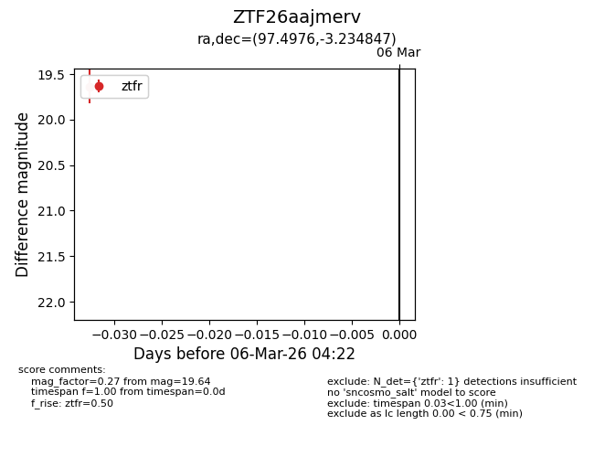
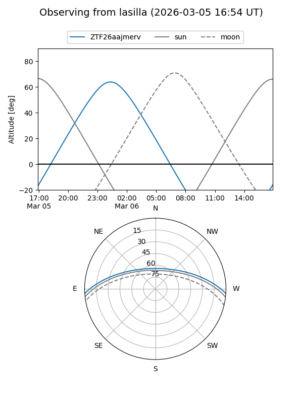
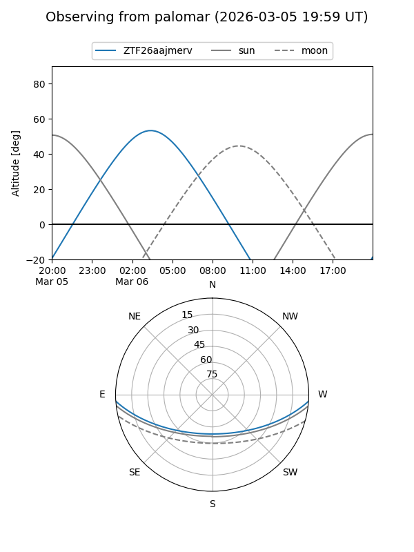

ZTF26aajmerv
Target ZTF26aajmerv at 2026-03-06 04:24
Aliases and brokers:
FINK: link
Lasair: link
ALeRCE: link
alt names
ZTF26aajmerv (ztf,fink_ztf)
Coordinates:
equatorial (ra, dec) = 97.4976,-3.23485
equatorial (HMS+DMS) = 06:29:59.42,-03:14:05.45
galactic (l, b) = (213.3745,-6.24409)
Flags:
Photometry:
last ztfr=19.64
1 ztfr detections
Lightcurve

Visibility


Additional plots